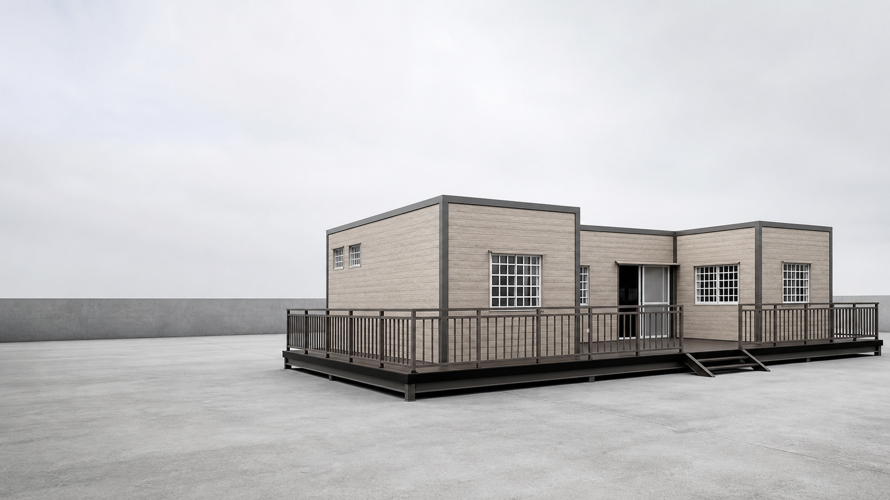

結構，先於外觀
從柱樑、樓板到接合方式，逐項討論承載、使用條件與施作細節。

OUR SOLUTIONS
從住宅到獨立工作室，從用途、基地與配置出發，規劃簡潔而實用的空間。
01 / SELECTED SPACES
照片選自官方素材；名稱與用途為設計提案，實際配置依基地與需求確認。
02 / KNOW THE DIFFERENCE
比較組合屋，從每一個部位開始。
將材料、施工與報價範圍放在相同條件下，一起看清楚。
| 比較部位 | 應確認的規格 | 評估方式 |
|---|---|---|
| 柱樑結構 | 材質等級、斷面尺寸、接合方式 | 索取個案結構圖說與相應資料 |
| 樓板系統 | 板材規格、支撐配置、使用載重 | 確認設計用途及樓板構造 |
| 牆體與屋頂 | 隔熱層、防水層、板材厚度 | 對照材料表及節點施工圖 |

從柱樑、樓板到接合方式，逐項討論承載、使用條件與施作細節。
採光、通風、隔熱與防水，在規劃之初就一起考量。
依基地尺寸與使用方式安排格局，讓每一處空間各得其所。
04 / THE PROCESS
從一個想法，到一個可以生活的空間。
分享用途、基地與預算方向。
確認現況、進出動線與施工條件。
討論格局、材料及施作範圍。
依確認圖說與合約安排作業。
逐項檢查，說明維護與使用方式。